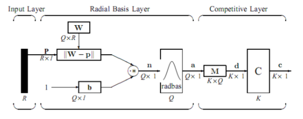

The network then passes data from the RB layer to the summation layer which calculates the closest distance between the training images and the input image and classifies the image based on the closeness of the data. This is usually done using Bayesian Theory REFNEEDED4. Some of the sources show the summation layer performing the following calculations REFNEEDED 7 9 10:
The PNN separates the input vectors into classes. An input vector is classified into a class A by the equation:
PACAF(x)A > PBCBF(x)B
Where
P
A - Priori probability of occurrence of patterns in class
C
A - Cost associated with classifying vectors
F(x)
A - Probability density function of class A
given by the equation F(x)
A = 1/(2π)
n/2 σ
n m
n
with Σ
mi = 1 exp(-2(x - x
A)
r (x - x
Ai)/σ
2
Where
x
Ai - i
th training pattern from class A
n - Dimension of the input vectors
σ - Smoothing parameter (corresponds to standard deviation of gaussian distribution)
